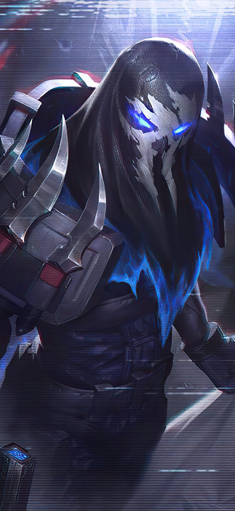

Pyke

A fiatal Pyke sok bilgewaterihez hasonlóan a dögkikötőkben kezdett dolgozni. Mindennap újabb mélytengeri
szörnyek tetemeit vontatták be a rakparton sorakozó üzemekbe, ahol aztán feldolgozták minden
porcikájukat. A kerületet, ahol munkát talált, Vérkikötőnek hívták, mivel onnan még a dagály sem tudta
kimosni a vörös, nyálkás uszadékot, amely a fapallókat nyaldosta szüntelenül.
Hamar kiismerte a szakmát: a munka kemény, a fizetség csekély volt. Pyke százszor is végignézte, ahogy
súlyos aranyerszényekkel fizetnek a kapitányoknak és legénységüknek, akik bevontatták a hatalmas
dögöket, amelyeket aztán ő és társai bontottak eladható részekre. Nem érte be néhány rézgarassal, ami a
zsebében maradt a hét végére, ezért addig győzködte az egyik kapitányt, amíg az fel nem vette a
legénységébe. Kevesen voltak elég bátrak ahhoz, hogy a hagyományos kígyó-szigeteki módszerrel
vadásszanak, ahhoz ugyanis puszta kézzel kellett a vontatóhorgokat rögzíteni, majd a még élő szörnyön
kellett elkezdeni a hentesmunkát. Pyke félelmet nem ismerő és ügyes szigonyossá vált, a legjobbak között
emlegették. Jól tudta, hogy a hús csak filléreket ér, az igazán értékes részek a nagyobb, veszélyesebb
szörnyek szervei voltak, amelyeket frissen kellett kivágni a bestiákból.
A préda veszélyességétől függött, hogy mennyit ér, és a bilgewateri kereskedők a lidérchalért fizettek a
legtöbbet. A hal tűhegyes fogakkal teli szájából kellett kiemelni a zafilittel teli mirigyet, amelyre
Runaterra-szerte óriási volt a kereslet. A világító kék olajat mágikus készítményekhez használták fel,
egyetlen palack árából tíz hajót meg lehetett venni, legénységgel együtt. Végül egy tapasztalatlan
kapitány vezette vadászat során tanulta meg Pyke, hogy milyen veszélyes szakmát választott.
Néhány napja voltak úton, amikor egy óriási lidérchal tört a felszínre, és nagyra tátotta száját,
láthatóvá téve az ott sorakozó zafilitmirigyeket. Több szigonnyal rögzítették a hajóhoz, és bár Pyke még
soha életében nem látott ekkora és ilyen idős példányt, habozás nélkül a szájába vetette magát.
Épp munkához látott volna, amikor valamiféle remegés tört elő a szörny mélységes mély torkából. A tenger
felszíne tajtékozni kezdett, és egy egész csapat lidérchal jelent meg. Mind nekitámadtak a hajó
oldalának. A kapitány pánikba esett, és elvágta Pyke kötelét. A halálra ítélt szigonyos utoljára a
legénység tagjainak iszonyodó arcát látta, ahogy végignézték, amint élve elnyeli őt a szörny.
Azonban Pyke története ezzel nem ért véget.
Az ismeretlen mélységben, ahol a gigászi víztömeg óriási nyomása nehezedik az óceánfenékre, magához tért
a hal szájában. Kék fények ezrei vették körül, és úgy tűnt, hogy őt figyelik. Egy ősi és titokzatos erő
öntötte el a tudatát, és látomások sora idézte elé, hogy mi mindent veszített el, míg mások egyre csak
gyarapodtak.
Pyke lelkét elárasztotta a bosszúvágy. Az óceán mélyére küldi azokat, akik valaha is ártottak neki.
Amikor visszatért Bilgewaterbe, először senki sem figyelt fel a gyilkosságokra – semmi szokatlan nem
volt abban, hogy néhányan beadták a kulcsot. De a hetekből hónapok lettek, és lassan kirajzolódott a
gyilkosságok mintája. Számos hajó kapitányát találták meg holtan, kibelezve. A kocsmákban szárnyra
kapott egy pletyka, miszerint az elátkozott hajó, a Terror egykori legénységét tizedeli egy
bosszúszomjas kísértet. Míg korábban büszkeséget és becsületet jelentett a kapitányi rang, onnantól
kezdve rettegett bélyeggé vált.
Azután következtek a duggatók, az elsőtisztek, a kereskedőtisztek, a bankárok... bárki, akinek csak köze
volt a dögkikötőkhöz. Egy új név jelent meg a körözési táblákon: ezer aranykraken a hírhedt Vérkikötői
gyilkos fejéért.
A mélység ugyan eltorzította az emlékeit, de Pyke-nak sikerült, ami senki másnak korábban: félelmet
keltett a gátlástalan üzletemberek, gyilkosok és tengerjáró banditák körében, pedig a nyilvántartás
szerint soha nem járt Terror nevű hajó Bilgewater kikötőjében.
A város, amely szörnyekre vadászik, egy szörnyeteg prédájává vált... és Pyke még nem végzett.